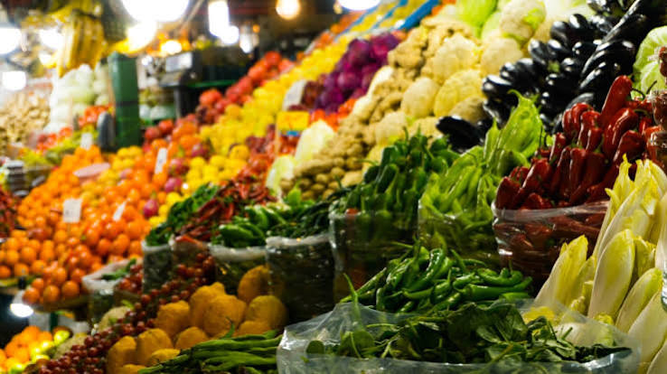

Our mission
To celebrate, preserve and share Africa's food heritage, to ensure that the recipes our grandmothers cooked are passed down to all generations to come.
Tastes of Africa is a home for anyone curious about African food. We collect recipes from home cooks, explain the culture and history behind each dish, and make them easy to cook wherever you are in the world.
We believe food is a living archive. Every pot of pilau or plate of egusi carries stories of trade, migration, family and celebration, and those stories deserve to be told.

A brief history of African cuisine
-
Ancient roots
Africa domesticated some of the world's oldest crops — sorghum, pearl millet, teff, fonio, yams, cowpeas (black-eyed peas), coffee and watermelon. Many are still everyday staples today.
-
Trade routes and spices
Caravans crossing the Sahara and dhows sailing the Indian Ocean brought spices, rice and new cooking styles. The Swahili coast blended African, Arab and Indian food into dishes like pilau and biryani.
-
The Columbian exchange
From the 1500s, crops from the Americas: maize, cassava, tomatoes, groundnuts and chilli peppers, arrived and were transformed by African cooks. Ugali, garri and pilipili all grew from this exchange.
-
Global influence
Africa's food travelled the world, often through the painful history of the transatlantic slave trade. Okra, black-eyed peas, sesame and rice-growing knowledge shaped the cooking of the Americas, from gumbo in Louisiana to rice and peas in the Caribbean.
Visit a food landmark
Carnivore Restaurant, Nairobi has welcomed visitors since 1980 with its famous nyama choma, roasted on Maasai swords over a giant charcoal pit and carved at your table.
It's a great introduction to Kenya's love of grilled meat and shared meals, and a stop on many food lovers' Nairobi itineraries.